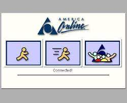

my first invitation online came from Disney channel. the narrator behind the mickey mouse ears told me to ask my parents if they would let me go online

obediently, I would ask my mom if I could go online, and if she wasn't busy, she would click around in a way that would make the little AOL man appear. We'd wait together as the computer made funny noises, and he slowly ran across the screen

After 10 minutes or so of intent watching, the screen would begin change into something more exciting, and I'd beging to see the Disney website come to life. I never wanted to miss this part. When the little man running transformed into something else.